HƯỚNG DẪN ĐĂNG KÝ TỜ KHAI NHẬP KHẨU
Để đăng ký mới tờ khai nhập khẩu, bạn vào menu : "Tờ khai hải quan / Đăng ký mới tờ khai nhập khẩu (IDA)" như hình ảnh sau đây.
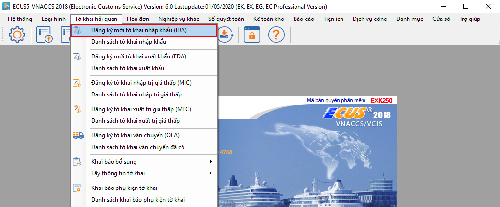
Màn hình tờ khai hiện ra như sau: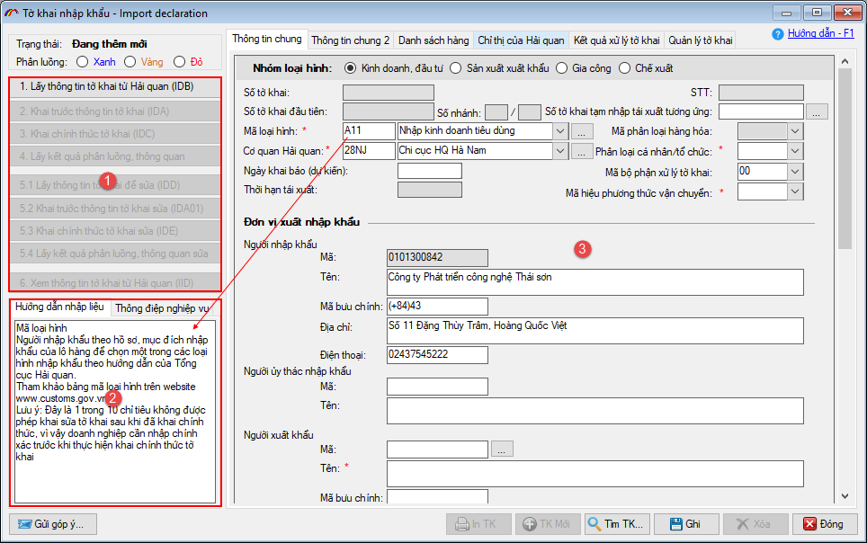
Để nhập liệu chi tiết cho tờ khai, các bạn thực hiện theo các phần hướng dẫn sau đây:
- Nhập thông tin cơ bản của tờ khai
- Nhập vào thông tin người nhập khẩu, đối tác xuất khẩu, đại lý làm thủ tục hải quan hoặc người ủy thác.
- Ô mã để trống
- Ô tên gồm 12 ký tự, trong đó nhập mã hãng hàng không (02 kí tự), số chuyến bay (04 kí tự), 1 gạch chéo, ngày/tháng (ngày: 02 kí tự, tháng 03 kí tự viết tắt của các tháng bằng tiếng Anh) ví dụ: VN2386/11MAR
Địa điểm dỡ hàng: Nhập vào cảng địa điểm dỡ hàng , có thể chọn từ danh mục bằng cách nhấn vào nút có dấu 3 chấm. Mã địa điểm dỡ hàng bạn chọn phải phù hợp với loại Phương thức vận chuyển đã chọn ở mục trên (phương thức vận chuyển là đường biển, đường không, đường sắt.. thì phải chọn mã địa điểm thuộc cảng biển, đường không, đường sắt tương ứng), ví dụ chọn mã địa điểm dỡ hàng cho phương thức vận chuyển đường biển là Cảng Hải Phòng thì bạn chọn mã là 'VNHPH - CANG HAI PHONG'. Trường hợp cảng địa điểm không xác định cụ thể thì người khai chọn mã địa điểm của mã nước kèm theo 'ZZZ' ví dụ VNZZZ – UNKNOW
Mã kết quả kiểm tra nội dung: Trường hợp người khai xem hàng trước khi đăng ký tờ khai thì nhập vào chỉ tiêu này với các lựa chọn trong danh mục, lưu ý: khi người khai hải quan có yêu cầu cơ quan Hải quan tiến hành kiểm tra thực tế lô hàng đối với một số trường hợp yêu cầu phải kiểm tra thực tế hàng hóa thì tờ khai mới được hoàn thuế, không thu thuế, thanh khoản… (VD: nhập hàng đã xuất khẩu bị trả lại) thì nhập vào lựa chọn là 'C'.
Lưu ý về việc khai số định danh hàng hóa đối với cảng biển và sân bay quốc tế Nội bài:
- Theo đề án quản lý giám sát hàng hóa cảng biển, định danh hàng hóa tờ khai nhập khẩu sẽ được khai vào chỉ tiêu Số vận đơn với cấu trúc: MMDDYYSOVANDON, trong đó:DD = Ngày, MM = Tháng, YY = Năm, SOVANDON = Số vận đơnNếu tờ khai có PTVT là đường biển, đường biển (không cont), đường bộ phần mềm sẽ tự động đánh dấu tích chọn vào mục "Khai báo số định danh theo đề án quản lý giám sát hải quan tự động tại cảng biển", khi đó doanh nghiệp nhập thông tin số vận đơn bình thường, đồng thời nhập thêm ngày vận đơn vào chỉ tiêu bên cạnh:
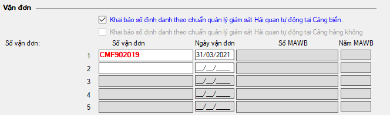
Lúc ghi tờ khai phần mềm sẽ tự động nối số định danh theo cấu trúc đã quy định: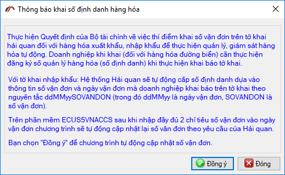
Nhấn đồng ý, kết quả chỉ tiêu số vận đơn sẽ được cập nhật lại như sau: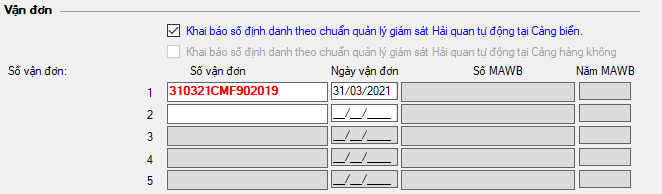
Khi mở tờ khai nhập khẩu có hàng hóa đưa vào cảng hàng không (Cảng hàng không quốc tế Nội Bài) thì doanh nghiệp cần tích chọn "Khai báo số định danh theo quyết định 2061/QĐ-BTC (Cảng hàng không quốc tế Nội Bài)" và thực hiện nhập vào chỉ tiêu "số vận đơn" theo các trường hợp sau: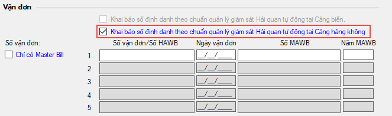
- Trường hợp gửi hàng qua forwarder (có phát hành HAWB)
- ##: Là ký hiệu bắt đầu cho 1 thông tin Vận đơn chủ
- X: Là số thứ tự tương ứng với thứ tự của Số vận đơn thứ cấp (số HAWB - House Airway Bill) là số hiệu quy định trên vận đơn do đại lý vận tải , giao nhận phát hành (forwarder) trong đó tên người nhận hàng trên vận đơn là người nhập khẩu trên tờ khai.
- YYYY: Là năm phát hành Vận đơn chủ
- NNNNNNNNNNN: Số của Vận đơn chủ (Số MAWB - Master Airway Bill) là số hiệu quy định trên vận đơn hàng không do hãng vận chuyển hàng không quốc tế phát hành để chuyên chở hàng hóa.
- ##: Là ký hiệu kết thúc cho 1 thông tin Vận đơn chủ
- Số vận đơn chủ 1: MAWB1: 98899457223
- Năm phát hành MAWB1: 2017
- Số vận đơn thứ cấp 1: HAWB: SCRS1474
- Số vận đơn chủ 2: MAWB2: 7881223023
- Năm phát hành MAWB2: 2017
- Số vận đơn thứ cấp 2: EGLX1424
- Trường hợp gửi hàng trực tiếp hãng HK (không phát hành HAWB)
- ##: Là ký hiệu bắt đầu cho 1 thông tin Vận đơn chủ
- X: Là số thứ tự của Vận đơn chủ (tương ứng với số thứ tự của Vận đơn chủ đã nhập ở ô "1.26 số vận đơn")
- YYYY: Là năm phát hành Vận đơn chủ
- ##: Là ký hiệu kết thúc cho 1 thông tin Vận đơn chủ
- Số vận đơn chủ 1: MAWB1: 98899457223
- Năm phát hành MAWB1: 2017
- Số vận đơn chủ 2: MAWB2: 78812230231
- Năm phát hành MAWB2: 2017
Trên tờ khai nhập khẩu, số định danh hàng hóa được nhập theo cú pháp sau:
Số định danh hàng hóa = ##XYYYYNNNNNNNNNNN##.
Mỗi vận đơn chủ khai cách nhau dấu ";" được khai tại ô ký hiệu và số hiệu bao bì
Trong đó:
Ví dụ trong trường hợp lô hàng có 2 vận đơn chủ, 2 vận đơn thứ cấp
Lúc làm tờ khai, người khai hải quan sẽ tiến hành nhập liệu vào phần mềm ECUS5VNACCS như sau
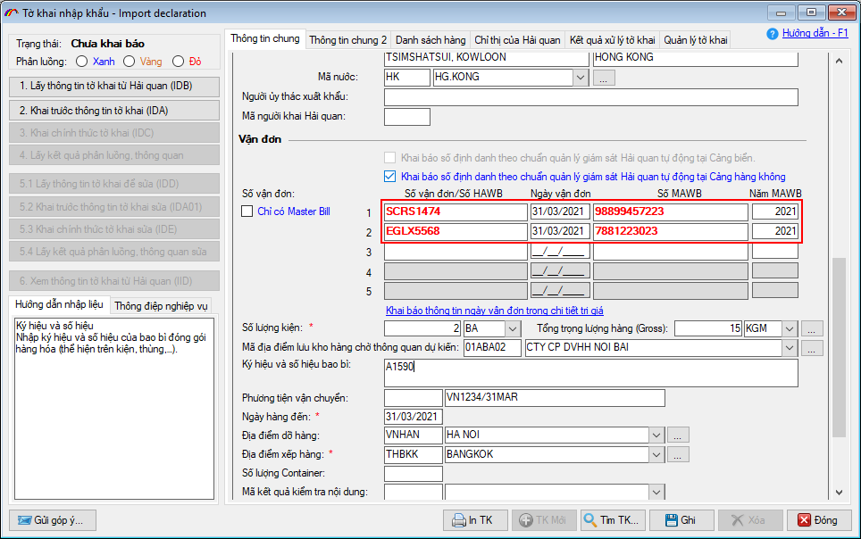
Sau khi nhập liệu thông tin tờ khai, người khai hải quan nhấn nút "Ghi" thì phần mềm Ecus5Vnaccs sẽ đưa ra thông báo về việc khai số định danh đối với tờ khai nhập
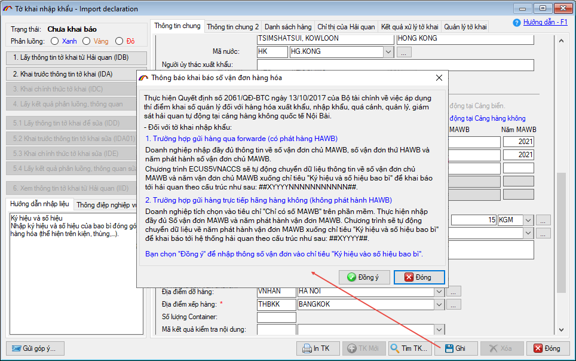
Tiếp theo, người khai hải quan chọn "Đồng ý" để chương trình tự động chuyển dữ liệu về thông tin vận đơn chủ MAWB xuống chỉ tiêu "Ký hiệu và số hiệu bao bì" để khai báo tới hải quan theo đúng cấu trúc quy định: ##XYYYYNNNNNNNNNNN##.
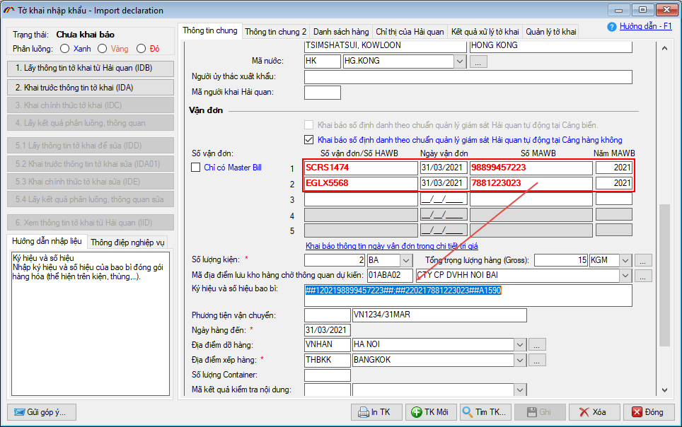
Trên tờ khai nhập khẩu, số định danh hàng hóa được nhập theo cú pháp sau:
Số định danh hàng hóa = ##XYYYY##. Mỗi vận đơn chủ khai cách nhau dấu ";" được khai tại ô ký hiệu và số hiệu bao bì
Trong đó:
Ví dụ trong trường hợp lô hàng có 2 vận đơn chủ
Lúc làm tờ khai, trên phần mềm ECUS5VNACCS người khai hải quan sẽ tích chọn "Chỉ có Master Bill" và tiến hành nhập liệu vào như sau:
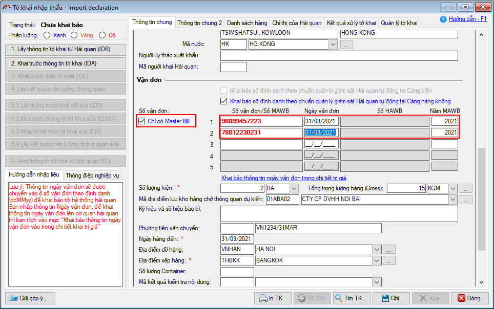
Sau khi nhập liệu thông tin tờ khai, người khai hải quan nhấn nút "Ghi" thì phần mềm sẽ đưa ra thông báo về việc khai số định danh đối với tờ khai nhập
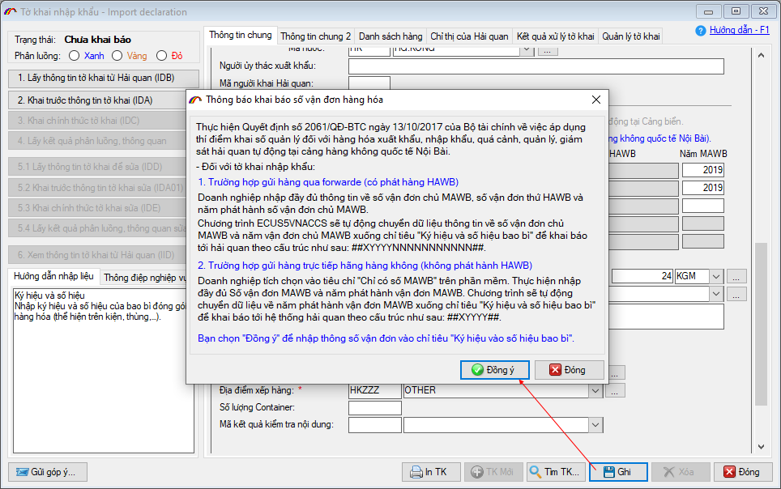
Tiếp theo, người khai hải quan chọn "Đồng ý" để chương trình tự động chuyển dữ liệu về thông tin vận đơn chủ MAWB xuống chỉ tiêu "Ký hiệu và số hiệu bao bì" để khai báo tới hải quan theo đúng cấu trúc quy định: ##XYYYY##.
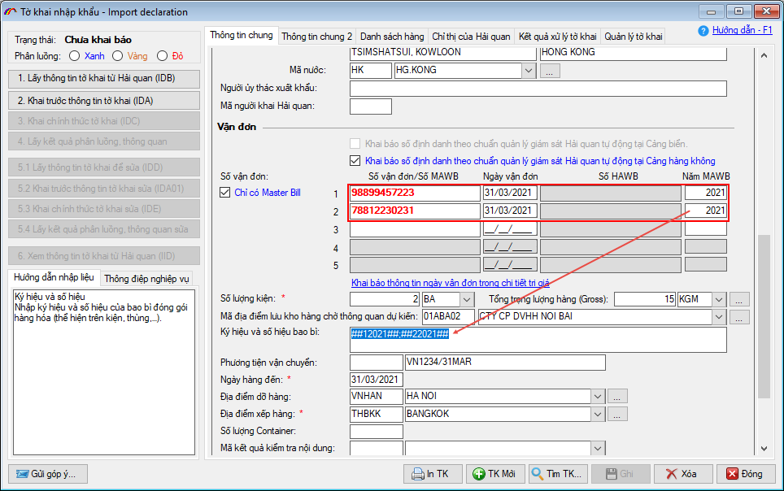
-
Văn bản pháp quy: Là nơi bạn nhập vào các mã văn bản pháp luật về quản lý hàng hóa, kiểm tra chuyên ngành liên quan đến hàng hóa nhập khẩu, bạn có thể nhập vào tối đa 05 văn bản pháp quy cho cùng một tờ khai. Ví dụ hàng hóa nhập khẩu của tờ khai là hàng liên quan đến chất nổ công nghiệp, bạn chọn mã văn bản pháp luật về quy định đối với chất nổ công nghiệp AM.
-
Giấy phép nhập khẩu: Trường hợp hàng hóa yêu cầu phải có giấy phép xuất nhập khẩu, giấy kết quả kiểm tra chuyên ngành thì ô thứ nhất bạn nhập vào mã loại giấy phép, ô số 2 nhập vào số giấy phép hoặc kết quả kiểm tra chuyên ngành. Ví dụ hàng hóa bạn nhập là hàng liên quan đến chất nổ công nghiệp, bạn được cơ quan chuyên ngành kiểm tra và cấp phép nhập khẩu thì chọn :
- Cơ quan hải quan : chọn mã cơ quan hải quan muốn gửi tệp file đính kèm
- Nhóm xử lý hồ sơ : chọn đội thủ tục hải quan.
- Phân loại khai báo : chọn phân loại khai báo để chỉ ra loại file đính kèm đang khai là gì, ví dụ :
- Khai báo đính kèm danh sách cont/seal thì bạn chọn là A02
- Trường hợp file đính kèm tổng hợp nhiều nội dung hoặc loại file đính kèm không có trong danh sách chọn cụ thể thì bạn có thể chọn mã A99.
- Thông tin ghi chú : nhập các thông tin cần thiết về tập tin đính kèm.
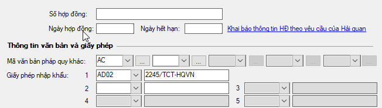
Nhập thông tin Giấy phépNhập mã văn bản pháp luật về quản lý nhập khẩu, kiểm tra chuyên ngành: giấy phép nhập khẩu, kiểm dịch, an toàn thực phẩm, kiểm tra chất lượng…
Nhập mã phân loại giấy phép nhập khẩu trường hợp hàng hóa phải có giấy phép nhập khẩu, kết quả kiểm tra chuyên ngành trước khi thông quan ...- Ô mã: chọn AM02 – Giấy phép hướng dẫn về vật liệu chất nổ tại việt nam- Ô số: Nhập vào số giấy phép do cơ quan chuyên ngành cấp.Nhập thông tin Hợp đồngNhập vào số Hợp đồng gia công đối với loại hình Gia công, nhập vào số Hợp đồng thương mại đối với các loại hình khác :
Trường hợp chọn loại hình là Gia công thì doanh nghiệp phải chọn Số hợp đồng từ Danh mục hợp gia công. Khi khai lên Hải quan số hợp đồng và ngày hợp đồng sẽ được gửi lên hệ thống Hải quan.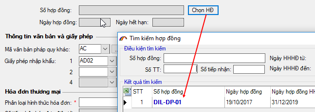
Trường hợp khác là các loại hình kinh doanh và sản xuất xuất khẩu thì chỉ nhập số hợp đồng vào để quản lý tại doanh nghiệp (Nếu Hải quan yêu cầu khai Số hợp đồng bạn nhập thông tin Số hợp đồng rồi nhấn vào "Chuyển thông tin hợp đồng rồi khai báo theo yêu cầu của HQ").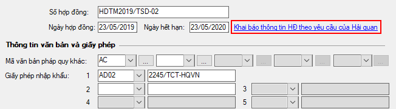
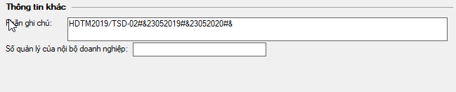
Bạn nhập vào thông tin trên hóa đơn hàng hóa về Số hóa đơn, ngày phát hành, phương thức thanh toán, trị giá hóa đơn, điều kiện giao hàng.
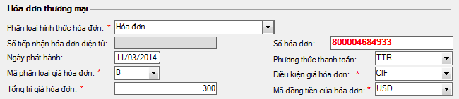
1. Phân loại hình thức hóa đơn: Chọn phân loại hình thức hóa đơn, nếu chọn D - hóa đơn điện tử được khai báo qua nghiệp vụ khai hóa đơn IVA. Bạn nhấn vào "Chọn hóa đơn" ở bên cạnh để chọn các hóa đơn điện tử đã được khai báo.
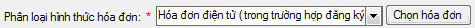
2. Tổng trị giá hóa đơn: Nhập vào tổng trị giá trên hóa đơn, yêu cầu việc nhập liệu ô này phải chính xác vì dữ liệu ảnh hưởng trực tiếp đến tiền thuế của tờ khai. Có thể nhập được vào 04 số sau dấu phẩy thập phân nếu mã đồng tiền thanh toán trên hóa đơn không phải là VNĐ, trường hợp là VNĐ thì bạn không thể nhập vào cho phần lẻ thập phân. Trường hợp có nhiều hóa đơn con (phụ lục hóa đơn) thì người khai phải khai đính kèm để gửi lên hải quan bằng nghiệp vụ HYS (tại menu "Nghiệp vụ khác / Đăng ký file đính kèm HYS").
Nơi thiết lập các khoản khai trị giá, tại mục này người khai cần lưu ý nhập các mục: Mã phân loại khai trị giá. Phí vận chuyển, bảo hiểm nếu có cùng các khoản điều chỉnh đi kèm (như là "chi phí đóng gói, tiền hoa hồng…")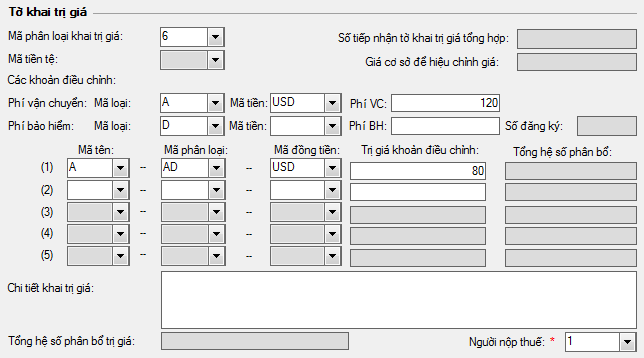
Mã phân loại khai trị giá : Người khai chọn mã phân loại cho tờ khai trị giá, tại thời điểm này doanh nghiệp chọn mã phân loại "6.Áp dụng phương pháp giá giao dịch" – phương pháp này tương ứng với Tờ khai trị giá phương pháp 1 ở trên phần mềm ecus4 hiện tại.
Vì theo thông tư số 22-2014-TT-BTC quy định tại khoản (đ) Điều 10 như sau:
Người khai hải quan khai tờ khai trị giá và nộp cho cơ quan Hải quan theo quy định tại Quyết định số 30/2008/QĐ-BTC ngày 21 tháng 5 năm 2008 và Thông tư 182/2012/TT-BTC ngày 25 tháng 10 năm 2012. Riêng trường hợp người khai hải quan xác định hàng hóa đủ điều kiện áp dụng phương pháp trị giá giao dịch (6), đồng thời đã khai thông tin trị giá trên Tờ khai hàng hóa nhập khẩu và Hệ thống tự động tính trị giá tính thuế thì người khai hải quan không phải khai và nộp tờ khai trị giá.
Lưu ý : Khi khai mã phân loại khai trị giá là các mã : 1,2,3,4,8,9 và T thì người khai hải quan khai tờ khai trị giá và gửi cho cơ quan hải quan bằng nghiệp vụ HYS, hoặc gửi tờ khai bản giấy.Phí vận chuyển, bảo hiểm: Nhập vào tổng phí vận chuyển và bảo hiểm cho lô hàng nếu có, lưu ý mã đồng tiền phí vận chuyển, bảo hiểm phải được quy đổi về cùng đồng tiền thanh toán trên hóa đơn.
Các khoản mục điều chỉnh: Nhập vào các khoản điều chỉnh giá hàng hóa nếu có, mỗi dòng hàng được phép có 05 khoản mục điều chỉnh khác nhau. Ví dụ hàng hóa nhập khẩu được hưởng khoản tiền hoa hồng, tiền môi giới bán hàng là 100 USD bạn chọn như sau :
+ Tại ô mã tên : Chọn A – phí hoa hồng bán hàng, phí môi giới
+ Tại ô mã phân loại: Chọn là AD – Khoản cộng vào
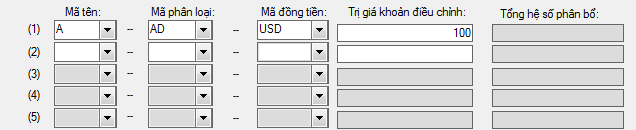
Nếu bạn có các khoản điều chỉnh được nhập ở mục này thì khi nhập xong danh sách hàng cho tờ khai bạn cần chỉ ra dòng hàng nào sẽ áp dụng các khoản điều chỉnh này.
Để chọn, tại danh sách hàng tờ khai bạn nhấn vào "Phân bổ phí" :
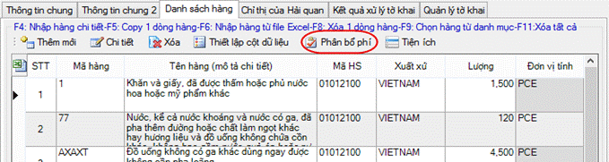
Màn hình chọn thiết lập và chọn dòng hàng hiện ra như sau :
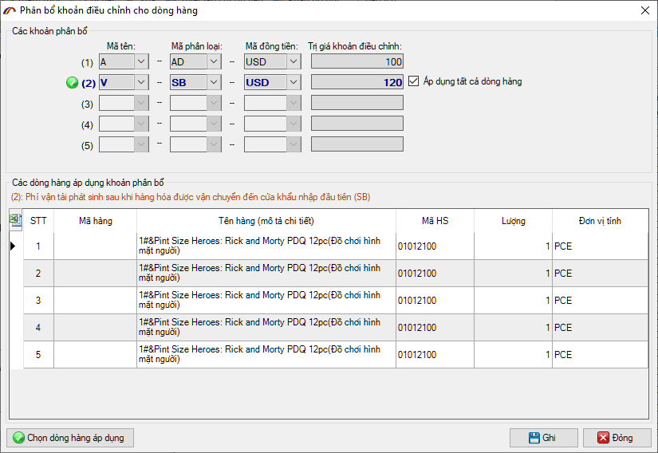
Chi tiết khai trị giá: Thông thường thì người khai sử dụng phương pháp phân bổ khai trị giá theo đơn giá, trong trường hợp có phân bổ theo số lượng người khai không phải nhập thông tin vào Các khoản mục điều chỉnh mà khai báo chi tiết khoản khai điều chỉnh vào mục này đồng thời phải tự nhập thủ công vào ô "Trị giá tính thuế" trên chi tiết hàng tờ khai.
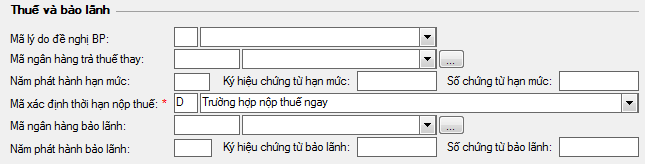
Thông tin về bảo lãnh thuế và hình thức nộp thuế của người khai hải quan, tùy theo từng trường hợp cụ thể mà người khai sẽ nhập vào thông tin cho mục này.
Người khai cần xác định mã loại hình thức nộp thuế, nếu có chứng từ bảo lãnh thuế thì chọn loại hình bảo lãnh (có 2 hình thức bảo lãnh là "bảo lãnh chung" và "bảo lãnh riêng cho từng tờ khai") và nhập vào đầy đủ thông tin đăng ký bảo lãnh bao gồm: Mã ngân hàng bảo lãnh, năm đăng ký, Ký hiệu chứng từ và số chứng từ.
Đối với doanh nghiệp là sản xuất xuất khẩu được thời hạn ân hạn thuế là 275 ngày thì bạn chọn mã xác định thời hạn nộp thuế là: C – Được ân hạn thuế nhưng không có bảo lãnh.
Trường hợp doanh nghiệp không có bảo lãnh thuế, phải nộp thuế ngay thì bạn chọn mã là D – Nộp thuế ngay. Đồng thời khi khai báo sửa đổi bổ sung người khai cũng chọn mã 'D' để được cấp phép thông quan sau khi thực hiện quy trình tạm giải phóng hàng.
Nếu là tờ khai gia công thì người khai không phải nhập vào chỉ tiêu này ( để trống).Khi tờ khai của bạn cần đính kèm các tệp dữ liệu (excel, word , images) về Hợp đồng, Hóa đơn, danh sách container thì bạn cần thực hiện các bước sau để gửi file đính kèm lên Hải quan.Khai báo đính kèm bằng nghiệp vụ HYS :Từ giao diện chính của chương trình ECUS5VNACCS, chọn menu "Nghiệp vụ khác / Khai báo file đính kèm HYS".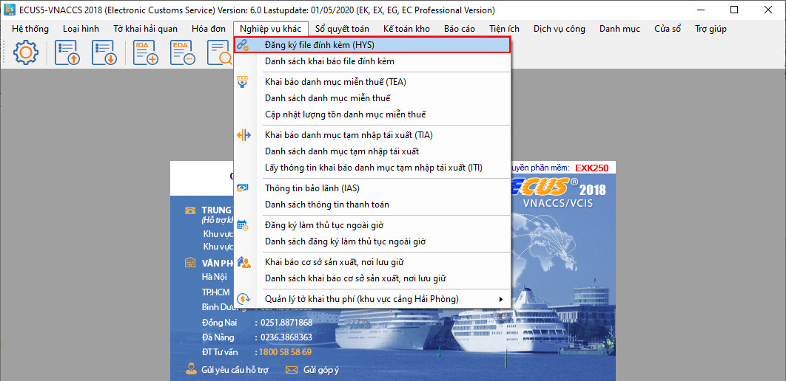
Màn hình nhập liệu hiện ra như sau :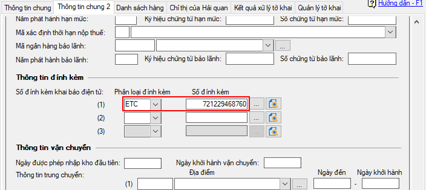
Nhập lần lượt các tiêu chí :Tiếp theo bạn chọn file đính kèm bằng cách nhấn vào "Thêm file", chương trình có sẵn mẫu cho 2 loại file đính kèm thường dùng là "Danh sách cont" và " Danh sách nguyên phụ liệu cung ứng".
Bạn cần lưu ý tổng dung lượng tất cả các file đính kèm không quá 2MB một lần gửi.Sau khi nhập xong thông tin bạn nhấn "Ghi" và tiến hành khai báo.Từ danh sách nghiệp vụ phía bên trái, bạn nhấn vào "Khai báo chứng từ đính kèm HYS"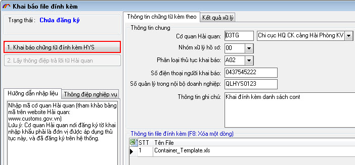
Phần mềm yêu cầu bạn ký số, chọn CKS trong danh sách và nhập mã PIN để bắt đầu gửi lên Hải quan.
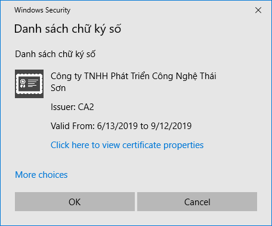
Thành công, hệ thống trả về số khai báo đính kèm, số này sẽ được sử dụng vào việc đính kèm điện tử trên tờ khai mà chúng tôi sẽ hướng dẫn ở bước dưới đây.
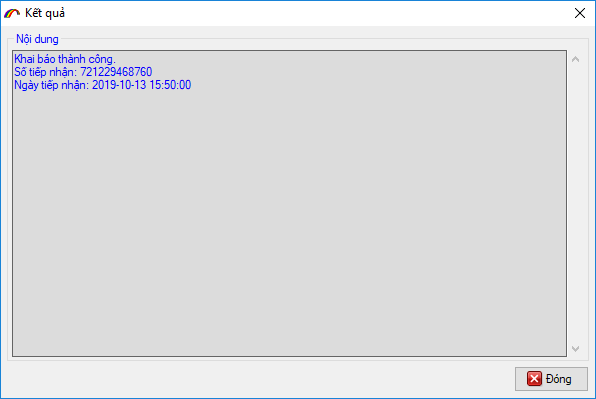
Nhập thông tin đã khai đính kèm vào tờ khaiSau khi khai báo thành công nghiệp vụ đính kèm điện tử HYS, để đưa thông tin đính kèm này vào tờ khai cần khai báo, bạn thực hiện như sau :
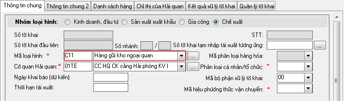
Trên tab "thông tin chung 2" : tại mục "Thông tin đính kèm":
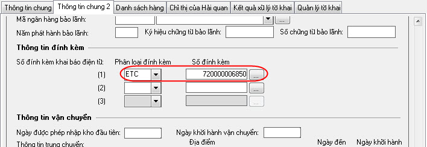
Ô phân loại đính kèm : chọn mã loại đính kèm bạn chọn mã loại là 'ETC'.Ô số đính kèm: bạn nhập trực tiếp số đính kèm đã được hải quan cấp lúc khai HYS ở bước trên (Có thể nhấn vào (…) để chọn từ danh sách).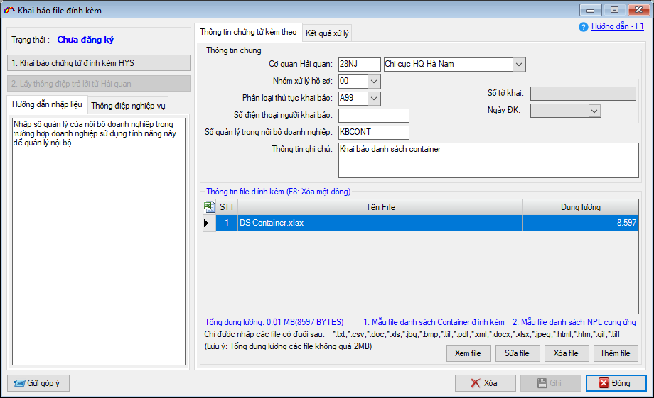
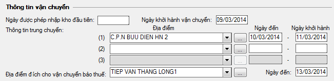
Mục này áp dụng cho các doanh nghiệp Gia công, sản xuất xuất khẩu, chế xuất hoặc các doanh nghiệp ưu tiên, đưa hàng vào kho bảo thuế khai báo vận chuyển đính kèm tờ khai.Các thông tin này nếu được nhập phải thành một bộ bao gồm: Ngày khởi hành, địa điểm trung chuyển và ngày đến địa điểm trung chuyển nếu có, địa điểm đích và ngày đến địa điểm đích. Ví dụ cụ thể được mô tả như hình ở trên.Ví dụ cụ thể :Công ty ABC mở tờ khai nhập khẩu làm thủ tục tại chi cục Hải quan đầu tư gia công Hà Nội (01PL), hàng đi đường biển về cảng cửa khẩu hải phòng (VNHPH) ,trước khi đưa hàng về kho công ty (01PLS02), hàng sẽ được dỡ tại kho bãi thuộc quản lý của Hải quan cảng (03CCS01 - KHO BAI HOANG DIEU) để chờ làm thủ tục. Khi đó doanh nghiệp thực hiện nhập thông tin "Địa điểm lưu kho chờ thông quan dự kiến " cho tờ khai như sau :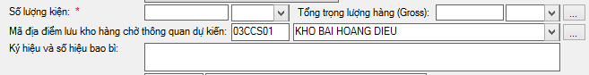
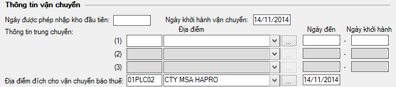
Trường hợp tuyến đường vận chuyển có dừng ở các địa điểm trung chuyển (ví dụ dừng tại kho 03PJC06) thì bạn nhập thông tin trung chuyển như hình sau (lưu ý chặng đường được nhập tối đa ba địa điểm trung chuyển) :
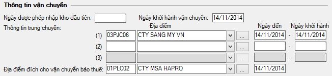
Để nhập thông tin hàng hóa cho tờ khai, bạn vào Tab "Danh sách hàng" :
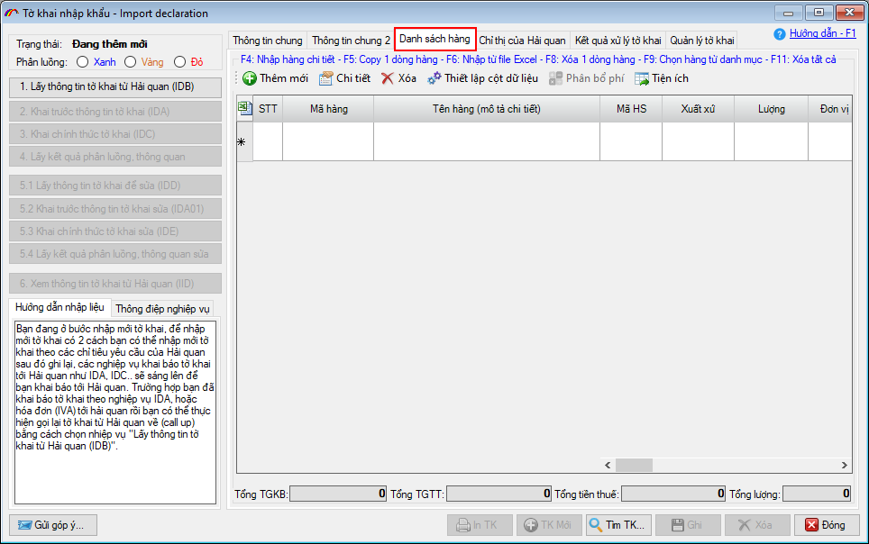
Tại đây bạn có thể nhập danh sách hàng theo 2 cách hướng dẫn như sau :
- Chỉ tiêu Trị giá tính thuế và Thuế suất nhập khẩu:
- Các chỉ tiêu về thuế suất và tiền thuế của các sắc thuế:
- Một số trường hợp đặc biệt đối với chỉ tiêu nhập trên danh sách hàng:
- Đối với tờ khai có áp dụng thuế tuyệt đối để khai báo bạn thiết lập bằng cách nhấn vào "Thiết lập cột dữ liệu" trên mục "Danh sách hàng" và chọn như hình sau:
- Đối với tờ khai có các khoản miễn giảm để khai báo bạn thiết lập khai báo bằng cách chọn "Thiết lập cột hiển thị" trên tab danh sách hàng và chọn như hình sau:
- Đối với tờ khai người khai tự nhập trị giá tính thuế và thuế suất người khai thiết lập bằng cách chọn "Thiết lập cột hiển thị" trên tab danh sách hàng và chọn như sau:
- Nhập danh sách hàng từ file Excel:
- Thông thường sẽ không có cột Trị giá tính thuế , Thuế suất và tiền thuế nhập khẩu
- (giống như giải thích trong phần nhập dòng hàng ở phần trên)
- Không có cột thuế suất và tiền thuế đối với các loại thuế: Thuế TTĐB, Thuế BVMT và Thuế GTGT (đối với các loại thuế này chỉ cần nhập cột mã biểu thuế tương ứng với sắc thuế).
- Hướng dẫn tra cứu mã biểu thuế của các loại thuế: Để tra cứu mã biểu thuế cụ thể của các loại thuế bạn vào menu "Tiện ích" chọn mục "Tra cứu mã biểu thuế" màn hình tra cứu hiện ra như sau:
- Một số tiện ích nhập liệu dòng hàng khác:
- Để nhập một dòng hàng bạn nhấn vào nút "Thêm mới" trên mục "Danh sách hàng", màn hình nhập chi tiết hiện ra như sau:
Khi chọn sang tab "Danh sách hàng" bạn có thể nhập thông tin hàng hóa trực tiếp trên danh sách hàng. Danh sách hàng được thiết kế theo các chỉ tiêu thông thường nhất mà người khai hay sử dụng để khai một bộ hồ sơ, các chỉ tiêu không bắt buộc hoặc phần mềm tự động tính sẽ được tô màu xám thể hiện rằng người khai không phải nhập vào các chỉ tiêu này.
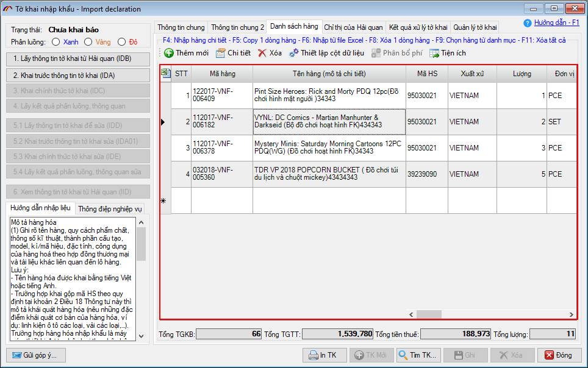
Đối với dòng hàng tờ khai VNACCS có một số lưu ý quan trọng như sau:
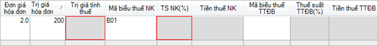
Trên danh sách hàng ô "Trị giá tính thuế" và ô "TS NK (%)" có màu xám nên bạn không phải nhập dữ liệu của hai ô này vì theo nghiệp vụ VNACCS thông thường Trị giá tính thuế và Thuế suất sẽ do hệ thống của Hải quan trả về. Trong một số trường hợp đặc biệt người khai vẫn có thể tự nhập Trị giá tính thuế và Thuế suất (chúng tôi sẽ hướng dẫn trường hợp đặc biệt này ở phần dưới).
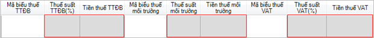
Các cột dữ liệu "Thuế suất TTĐB (%)", "Tiền thuế TTĐB" , Thuế suất môi trường", Tiền thuế môi trường", "Thuế suất VAT (%)", "Tiền thuế VAT" có màu xám nên bạn không phải nhập liệu, thông tin từ từ các cột dữ liệu này sẽ do hệ thống của Hải quan trả về, người khai chỉ cần chọn các mã biểu thuế tương ứng cho các sắc thuế này.
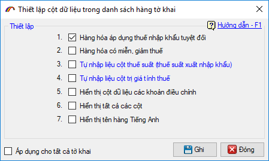
Khi đó trên danh sách hàng, các cột nhập liệu về khoản áp dụng thuế suất tuyệt đối sẽ hiện ra, bạn có thể nhập thuế suất tuyệt theo hai cách như sau:
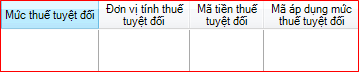
Cách thứ nhất: Người khai nhập tỷ lệ mức thuế tuyệt đối, trường hợp này khi nhập liệu bạn phải nhập vào cả 3 tiêu chí "Mức thuế tuyệt đối", "Đợn vị tính thuế tuyệt đối" và "Mã tiến thuế tuyệt đối".
Cách thứ hai: Sử dụng mã áp dụng mức thuế tuyệt đối, khi đó bạn chỉ cần nhập vào chỉ tiêu "Mã áp dụng mức thuế tuyệt đối".
Lưu ý: Bạn chỉ được chọn một trong hai cách nhập ở trên cho trường hợp khai áp dụng mức thuế tuyệt đối, đồng thời mã biểu thuế XNK phải chọn là B15- Biểu thuế nhập khẩu tuyệt đối.
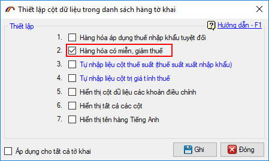
Khi đó các khoản khai miễn/ giảm cho thuế xuất nhập khẩu và các sắc thuế khác sẽ hiện ra trên danh sách hàng:
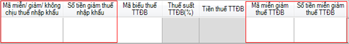
Khi khai báo mã miễn giảm, người khai cần lưu ý như sau: Nếu mã áp dụng miễn / giảm bạn chọn là "Mã giảm thuế" thì bắt buộc phải nhập số tiền được giảm vào ô "Số tiền giảm", trường hợp là mã Miễn thì không cần phải nhập.
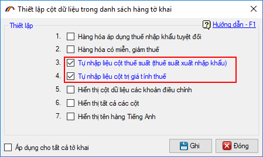
Trên danh sách hàng 2 cột chỉ tiêu "Trị giá tính thuế" và "TS NK (%)" đã đổi trạng thái sáng lên và bạn có thể nhập trực tiếp vào 2 chỉ tiêu này.
Để nhập dữ liệu hàng tờ khai từ file excel, bạn chuẩn bị dữ liệu từ file excel với các cột dữ liệu tương ứng với các cột dữ liệu trên dòng hàng như ví dụ mẫu sau:
Đối với dữ liệu dòng hàng nhập vào tờ khai VNACCS người khai cần lưu ý một số cột dữ liệu sau:
Sau khi đã chuẩn bị file dữ liệu dòng hàng trên file excel, bạn nhấn phím F6 để tải dữ liệu từ file excel vào danh sách hàng trên tờ khai. Màn hình tải dữ liệu từ excel hiện ra như sau:
Để tải dữ liệu từ file excel bạn thực hiện các bước thiết lập sau:
Bước 1: Chọn file excel
Bạn chọn tới file excel đang có dữ liệu về hàng hóa nhập sẵn bằng cách nhấn vào "Chọn file EXCEL...".

Bước 2: Chọn tên sheets trong file excel mà có chứa thông tin hàng hóa đang cần nhập tại ô "Chọn tên sheet" mục thông số.

Bước 3: Thiết lập dòng đầu tiên trên file excel có dữ liệu dòng hàng, như hình sau:
Trường hợp fonts chữ bạn nhập trên file excel là TCVN3, để tránh bị lỗi fonts khi import vào phần mềm bạn đánh dấu chọn vào mục

Bước 4: Thiết lập các cột dữ liệu tương ứng với cột dữ liệu trên danh sách hàng như hình sau:
Sau khi thiết lập xong bạn chọn nút "Ghi" để chương trình tải dữ liệu từ file excel vào danh sách hàng của tờ khai.
Chọn sanh sách hàng từ danh mục có sẵn: Bạn nhấn F9 để chọn danh sách hàng từ danh mục hàng nhập khẩu hoặc danh mục nguyên phụ liệu, thiết bị, sản phẩm, hàng mẫu đã khai trước đó đối với loại hình Gia công, Sản xuất xuất khẩu, Chế xuất.
Chức năng copy dòng hàng: Bạn chọn dòng hàng muốn copy sau đó nhấn F5 để tạo ra một dòng hàng tương tự.
Trên màn hình nhập chi tiết hàng bạn thấy có rất nhiều chỉ tiêu, đây là tất cả các chỉ tiêu được thiết kế theo chuẩn của VNACCS bạn chỉ cần quan tâm đến các chỉ tiêu thông thường giống như các cột dữ liệu trên danh sách hàng mà đã hướng dẫn trong cách nhập dòng hàng theo cách thứ nhất (nhập hàng trực tiếp trên danh sách).
Bạn nhập lần lượt các chỉ tiêu của dòng hàng theo hướng dẫn nhập liệu, lưu ý ô "Thuế suất" và ô "Trị giá tính thuế" thông thường người khai không phải nhập mà hệ thống sẽ tự động trả về giống như phần giải thích khi nhập theo danh sách dòng hàng ở trên.Mặc định khi bạn nhập vào các chỉ tiêu số lượng, đơn giá phần mềm sẽ tự động tính trị giá hoặc nhập vào số lượng , trị giá phần mềm sẽ tự động tính đơn giá. Nếu muốn nhập theo cách tính riêng của mình (phần mềm không tự tính) thì bạn bỏ chọn đánh dấu mục :
Bạn có thể xem thêm cách nhập hàng chi tiết theo tiêu chí đầy đủ của VNACCS tại đây: Nhập danh sách hàng trực tiếp
hoặc chuyển sang phần Khai báo tờ khai lên Hải quan
Bản quyền © thuộc về Công ty TNHH Phát triển công nghệ Thái Sơn
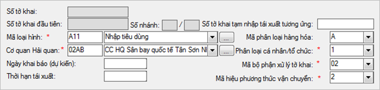
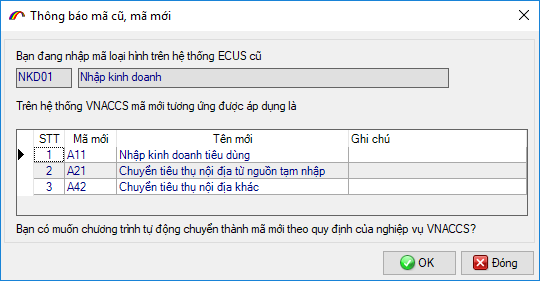
Ngoài ra bạn có thể nhấn vào nút có dấu (…) hoặc nhấn phím F3 để tìm và chọn loại hình cụ thể
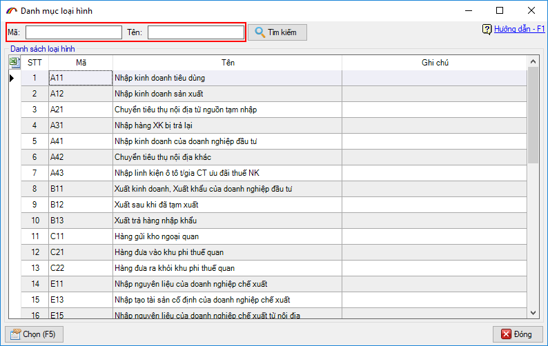
Cách chọn này sẽ áp dụng tượng tự đối với các danh mục khác từ hệ thống danh mục cũ như: Mã cảng địa điểm, cơ quan hải quan…
Cơ quan hải quan: chọn đơn vị hải quan khai báo, bộ mã đơn vị hải quan cũng được đổi mới ví dụ mã đơn vị hải quan Đầu tư gia công hải phòng trên hệ thống điện tử hiện tại là P03A thì trên hệ thống vnaccs là 03PA, các đơn vị hải quan khác bạn có thể chọn từ danh mục mà chương trình đã chuyển đổi sẵn.
Mã phân loại hàng hóa: Tùy theo tính chất hàng hóa đang nhập mà người khai tiến hành chọn các mã tương ứng trong danh sách, lưu ý đối với mã phân loại là 'J – Hàng khác theo quy định của chính phủ' thì chỉ khi có văn bản của Chính phủ, các cơ quan nhà nước người khai mới được chọn, trong trường hợp hàng hóa không thuộc loại nào có trong danh sách thì người khai bỏ trống chỉ tiêu này.
Số tờ khai tạm nhập tái xuất tương ứng: Người khai chỉ nhập vào chỉ tiêu này khi tờ khai đang khai có mã loại hình được chọn là loại hình tái nhập, với các loại hình khác thì không được nhập. Bạn nhập vào số tờ khai tạm xuất ( đã được thông quan trước đó) của lô hàng bạn sẽ tái nhập trên tờ khai đang khai này. Đồng thời khi nhập chi tiết hàng tái xuất trên danh sách hàng tờ khai cần chỉ rõ số dòng hàng tương ứng trên tờ khai tạm xuất đã chọn. cụ thể cách nhập như sau:
Thứ nhất: tại ô mã loại hình bạn chọn loại hình tái nhập, ví dụ G11 – Tái nhập hàng kinh doanh TNTX.
Thứ hai: tại ô số tờ khai tạm nhập tái xuất , bạn nhấn vào nút có dấu (…), màn hình chọn hiện ra như sau.
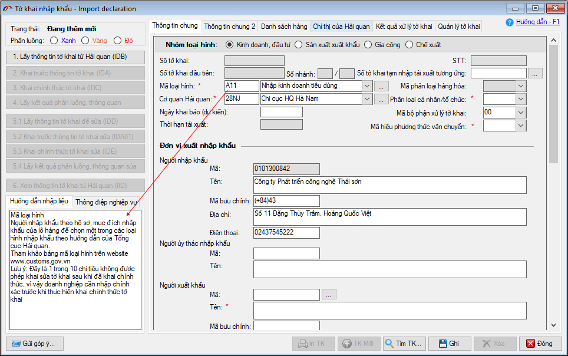
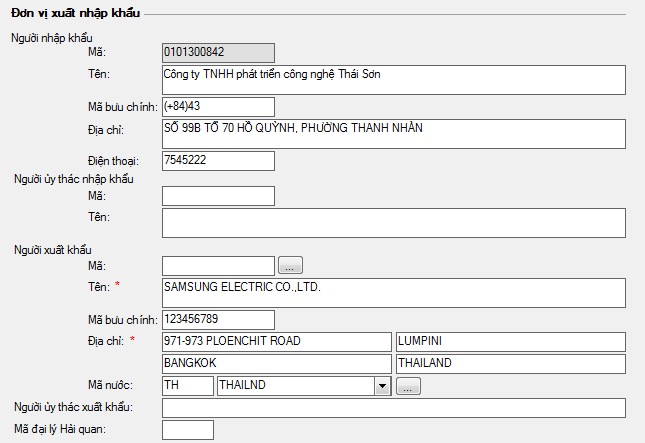
Người nhập khẩu là thông tin đơn vị đang khai tờ khai nhập khẩu, thông tin này sẽ được chương trình lấy tự động khi bạn đăng ký thông tin doanh nghiệp trong lần đầu chạy chương trình. Hoặc bạn chỉ cần nhập vào Mã số thuế, các thông tin về tên, địa chỉ sẽ do hệ thống tự động trả về.
Nhập vào các thông tin về vận chuyển hàng hóa như số vận đơn, phương tiện vận chuyển, cảng địa điểm dỡ / xếp hàng.
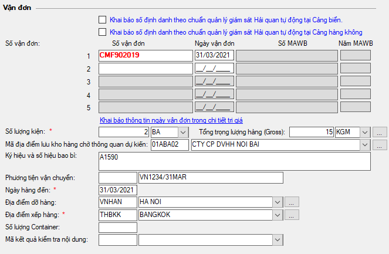
Thông tin vận đơn: Số vận đơn được nhập theo định dạng: Mã Scac code + số vận đơn, trong đó mã scac code là mã của nhà vận chuyển (bạn có thể tham khảo tại địa chỉ website www.customs.gov.vn) ví dụ số vận đơn: CMF902019. Nếu là vận đơn gom hàng hàng không thì có thể nhập tối đa 5 số vận đơn, trên phần mềm mặc định ô số vận đơn đầu được hiển thị để bạn có thể nhập liệu, sau khi nhập vào ô đầu tiên các ô tiếp theo sẽ tự động hiện ra cho phép nhập tiếp theo tuần tự tránh được tình trạng bạn nhập sai thứ tự cần thiết, cách thức hiển thị này cũng sẽ được áp dụng cho tất cả các chỉ tiêu khác mà có nhiều hơn 1 ô nhập liệu. Để khai chi tiết danh sách container và số Seal, người khai phải thực hiện khai đính kèm bằng nghiệp vụ HYS (tại menu "Nghiệp vụ khác / Đăng ký file đính kèm HYS") sau đó nhập vào tờ khai tại mục "Thông tin đính kèm" trên tab "Thông tin chung 2" của tờ khai nhập khẩu.
Tổng trọng lượng hàng hóa: Nhập vào tổng trọng lượng hàng và đơn vị tính trọng lượng theo đơn vị Kilogame – KGM, Tấn – TNE hoặc Pound – LBR, tổng trọng lượng có thể nhập vào tối đa 06 ký tự cho phần nguyên và 03 ký tự cho phần lẻ thập phân, ví dụ: 950000.525 , nếu là hàng vận chuyển theo đường hàng không phần lẻ thập phân chỉ được nhập tối đa 01 ký tự, ví dụ 950000.5. Nếu bạn nhập vào đợn vị trọng lượng là LBR thì sau khi khai báo IDA, hệ thống sẽ tự động quy đổi và trả về đơn vị là KGM.
Mã địa điểm lưu kho hàng chờ thông quan dự kiến: Nhập vào mã địa điểm lưu kho dự kiến cho hàng hóa chờ thông quan, mã địa điểm lưu kho có thể là địa điểm chịu sự giám sát của hải quan, các kho hàng, các công ty dịch vụ kho bãi hoặc kho công ty đã được đăng ký vào hệ thống, ví dụ hàng hóa được lưu kho chờ thông quan tại địa điểm 'CTY CP DVHH NOI BAI' chịu sự giám sát của Hải quan nội bài bạn chọn mã là '01ABA02'.
Phương tiện vận chuyển: Nhập vào phương tiện vận chuyển tùy theo phương thức vận chuyển bạn đã chọn ở trên, ví dụ với phương thức là đường không thì phương tiện vận chuyển bạn nhập vào theo định dạng như sau: